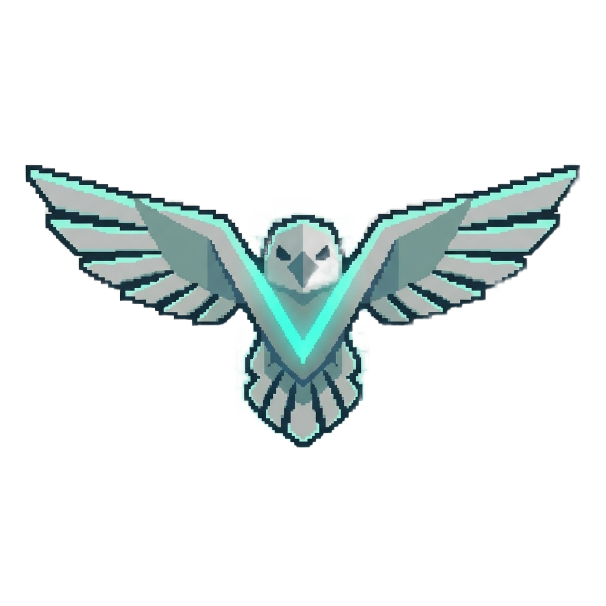
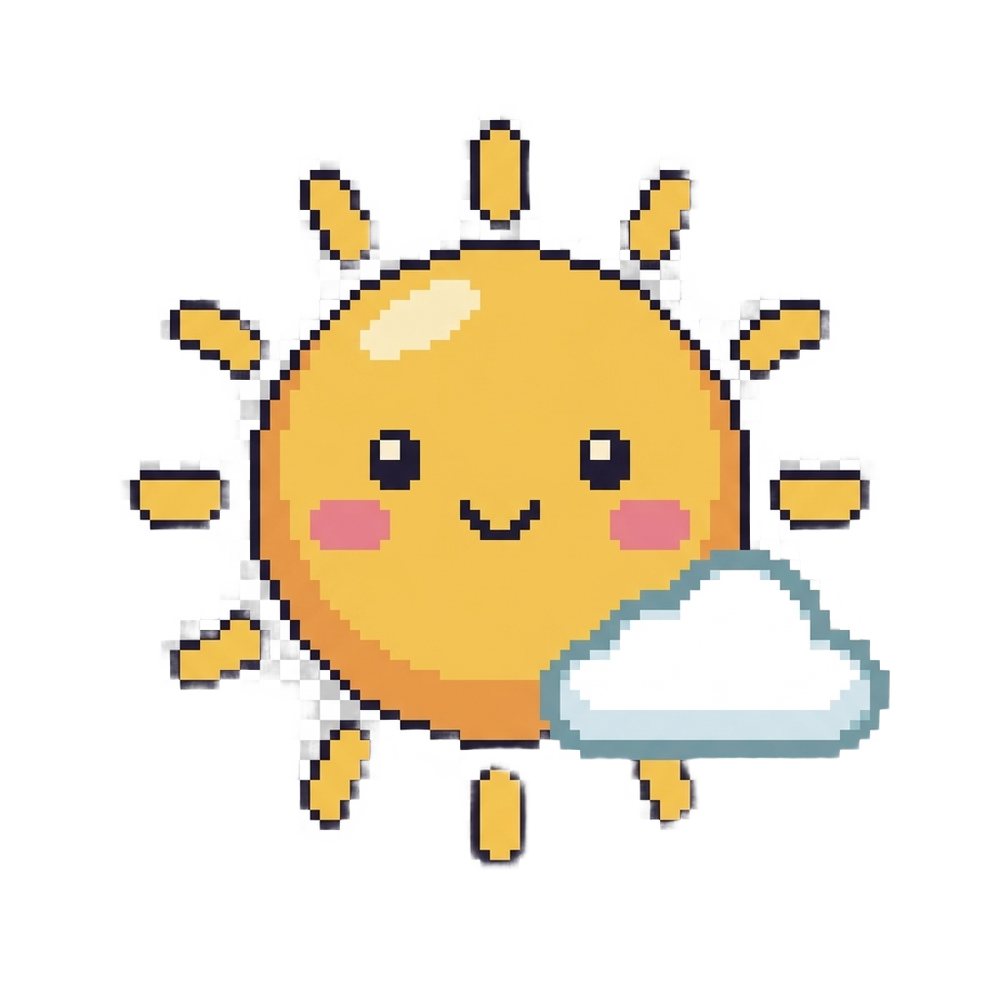

A silent mascot that sits on your screen and reacts when the harness works — so you can see VERITY is on.

Truth Hawk
VERI (Sun)✦ AVANI — easter egg: the Afrofuturistic neural companion herself.
Voice runs locally via open-source TTS (Voicebox) — no per-word cloud cost. Talk-back uses on-device Whisper and needs microphone permission. Upload/clone keeps your clip on-device.
Drag the mascot to move it · click it for an animation · right-click the tray “V” to change anything later.